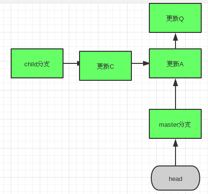
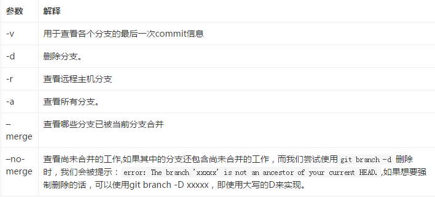
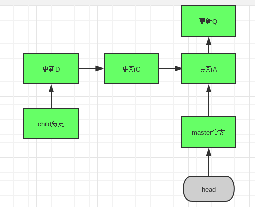
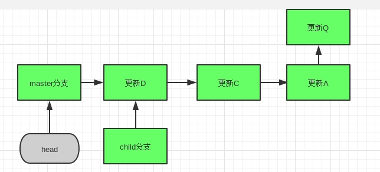
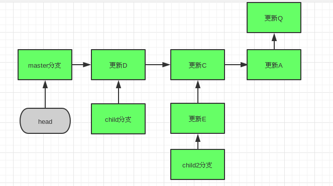
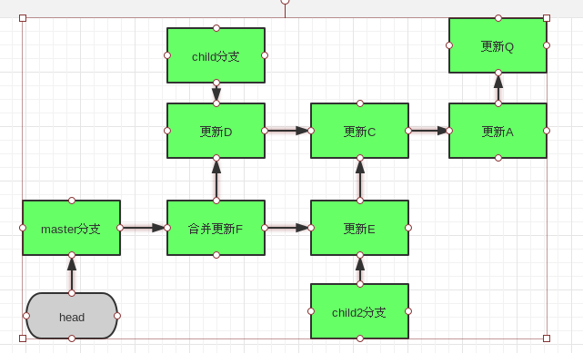

来自： 一步一脚印 - CSDN博客
链接：http://blog.csdn.net/qwe6112071/article/details/51118761（点击尾部阅读原文前往）
git 通过可变指针来实现对提交数据的历史版本的控制，每当我们提交新的更新，当前分支(设为master)则指向最后一个提交更新A，而最后一个提交对象则存在一个指针指向前一次的提交更新Q。如果我们创建一个新的分支，child，它和master共同指向A，这时，如果我们向child分支提交更新B，我们会发现child指向B，而master依然指向A。无论我们在child分支进行了任何开发，只要回到master分支，就能恢复到更新A的数据状态了。

在图片里，我们还注意到有一个head指针，一般来说，它会指向我们目前所在的工作分支。现在它指向了我们的master分支，意思是master是我们目前的工作分支。一旦提交更新，就会在master分支上提交。现在，让我们看看与git分支有关的操作命令：
1、git branch [option] [name]
如果不使用任何参数，它可以用来查看所有的分支,而在分支名前有*标记的则为主分支，如果加上name为创建新分支，,如git branch child,则会创建一个名为child的分支，此外，它有一些常用的参数：

2、git checkout [name]
切换到对应的分支，对于上图，如果我们是使用 git checkout child，我们的head指针就会指向child分支了。这时候，如果我们提交新的更新D，我们会发现：

我们的D指向C，而C依然指向A，也就是说，以后我们在child分支上做的任何更新，都不会对master分支所在的之路造成任何影响！一旦使用了checkout命令，我们还会发现，不仅head指针会指向新的分支，而且当前工作目录中的文件也会换成了新分支对应的文件了。
此外，我们还可以使用git checkout -b [name]命令，它会新建一个分支，并自动将当前的工作目录切换到该分支上。
3、git merge [name]
合并分支，有的时候，我们创建次要分支，可能是为了修改原有程序的bug，或为了拓展新的功能，这时候如果我们想把次要分支的修改何并进主分支中，我们可以使用git merge 命令来实现。
1、“Fast forward”(快进)式合并:
如果像上图所示，我们要把child分支合并进master中，因为child分支所指向的更新在master分支的直接上游，git会使用“Fast forward”(快进)式合并，直接将master分支指针指向child分支所指向更新，如下图所示：

这时候，如果我们觉得child分支没什么用了，我们可以使用git branch -d child来删除分支。
2、基本合并
如果我们这次要合并的分支不在我们目前分支的上游，如下图所示：

这时，如果使用快进式合并（将master分支指向更新E),这样就会丢失更新D了，于是，我们采用另一种合并方式，它的合并结果如下图所示：

我们会发现，此时master分支所指向的合并更新F出现了两个祖先。
3、冲突合并
基本合并的冲突源于两个分支间的所指向的版本更新不能根据箭头方向从一方抵达另一方，即两个分支在更新C单向分岔了，但我们还发现，更新C、A、Q还是master和child分支的共同父更新，如果两个分支都对C或A或Q版本的相同文本相同位置做了不同的修改，git就无法智能地将两者合并一起，因为它不能判断master的修改和child的修改哪个是更佳的，事实上，这个只能由人来解决。比如两个分支共同修改了版本C中的README文件的第1行：
1、 master: I’m master!
2、 child: I’m child!
当我们尝试从master上合并child时，会出现：
$ git merge child
自动合并 README
冲突（内容）：合并冲突于 README
自动合并失败，修正冲突然后提交修正的结果。
或英文版的：
Auto-merging README
CONFLICT (content): Merge conflict in README
Automatic merge failed; fix conflicts and then commit the result.
这时调用git status命令，会看到：
$ git status
位于分支 master
您有尚未合并的路径。
（解决冲突并运行 “git commit”）未合并的路径：
（使用 “git add …” 标记解决方案）双方修改： README
或英文版的：
$ git status
README: needs merge
On branch master
Changed but not updated:
(use “git add …” to update what will be committed)
(use “git checkout – …” to discard changes in working directory)unmerged:
README
这时候我们打开README文件，就会看到：
1 <<<<<<< HEAD
2 I’m master
3 =======
4 I’m child!
5 >>>>>>> child
“=======”分开了两个分支的冲突部分，'''<<<<<<<HEAD为主分支的，而>>>>>>>child上面就是要合并部分的了。这时候，我们需要修改冲突部分，比如改成
1 I'master and child!
修改完后，我们还需要通过git add 和git commit来提交对冲突的修改，这样。我们就完成了这次冲突合并了！
1、git fetch [远程主机名] [远程分支名][:本地分支名]
如果不指定分支名，会获取远程主机的全部最新更新。如果指定了分支，则获取该分支的最新更新,如果还指定了本地分支名，则会新建对应的分支来来保存远程分支的所有数据。此时获取的更新会放在“远程主机昵称/远程分支名”这样的分支上，如origin/master,如果像要合并到我们本地分支master，需要使用git merge命令，但此时需考虑之前提到的合并冲突问题。
2、git pull [远程主机名] [远程分支名][:本地分支名]
先从远程主机的特定分支获取更新，并合并到本地分支上，如果不指定本地分支，则默认合并到当前分支上，如果当前分支与远程分支（从远程分支检出的本地分支）存在追踪关系，git pull就可以省略远程分支名
3、git branch –set-upstream [本地分支名] [远程主机名/远程分支名]
如果我们想要手动建立本地分支和远程分支的跟踪关系，可以使用此指令
4、git push [远程主机名] [本地分支]:[远程分支]
如果省略远程主机名，则将其推送到具有跟踪关系的远程分支上，如果远程分支不存在，则会新建。
如果省略本地分支，则相当推送一个空的分支当远程分支，即会删除远程分支。
如果当前分支和远程分支存在跟踪关系，则可以忽略本地/远程分支名
如果当前分支只有一个追踪的远程分支，则可以把远程主机名，本地/远程分支名都省略掉
不带任何参数的git push，默认只推送当前分支，这叫做simple方式（Git 2.0版本后的默认模式）。此外，还有一种matching方式，会推送所有有对应的远程分支的本地分支。如果需要修改默认配置，git config –global push.default simple/default来设置
如果不管是否存在对应的远程分支，将本地的所有分支都推送到远程主机，可以使用–all参数，如： $ git push –all origin
上面命令表示，将所有本地分支都推送到origin主机
●本文编号1584，以后想阅读这篇文章直接输入1584即可。
●本文分类“工具”搜索分类名可以获得相关文章。
●输入m可以获取到文章目录
算法与数据结构↓↓↓
Java编程↓↓↓
更多推荐请看《15个技术类公众微信》
涵盖：程序人生、算法与数据结构、黑客技术与网络安全、大数据技术、前端开发、Java、Python、Web开发、安卓开发、iOS开发、C/C++、.NET、Linux、数据库、运维等。传播计算机学习经验、推荐计算机优秀资源：点击前往《值得关注的15个技术类微信公众号》
![]()